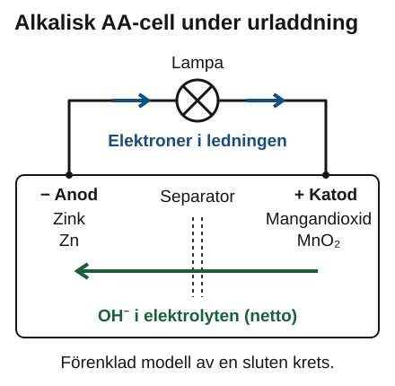

Vetenskaplig briefing · Kemi och fysik
Vad tar slut i ett batteri när lampan slocknar?
En ficklampa lyser svagare och slocknar till sist. Finns det då färre elektroner i batteriet än när det var nytt? Det som har förändrats är framför allt vilka ämnen som finns vid batteriets båda elektroder. Medan lampan lyste har zink lämnat ifrån sig elektroner och mangandioxid tagit upp dem. Elektroner har kunnat gå genom lampan eftersom joner samtidigt har burit laddning inne i batteriet.
Två poler och två sorters ledare
Tänk dig en ficklampa med en enda alkalisk AA-cell, märkt LR6. AA beskriver storleken. Inuti just den här cellen finns zinkpulver och mangandioxid. Zinkpulvret ligger i en gel och har elektrisk kontakt med minuspolen. Mangandioxiden finns i en ringformad massa som ligger mot stålbehållarens insida och har kontakt med pluspolen. Kol i massan hjälper till att leda elektroner. Elektroderna är de delar där kemin möter den elektriska kretsen.
Mellan materialen finns en tunn, porös separator. Den håller de fasta ämnena isär och hindrar dem från att få direkt elektrisk kontakt. Porerna innehåller en vattenlösning av kaliumhydroxid. Lösningen finns också inne i elektrodmaterialens porer. Den kallas elektrolyt och innehåller rörliga, elektriskt laddade partiklar, bland annat positiva kaliumjoner och negativa hydroxidjoner. En separator som stängde ute även jonerna skulle därför göra lampan oanvändbar.

Vad händer när du trycker på knappen?
Med brytaren öppen kan du mäta en spänning mellan batteriets poler. De två elektrodmaterialen har olika benägenhet att lämna ifrån sig eller ta upp elektroner. Skillnaden gör att cellen kan överföra energi för varje laddningsmängd som passerar genom en ansluten apparat. Så länge det finns ett glapp i ficklampans krets går ingen varaktig ström genom lampan. En spänning kan alltså finnas redan innan lampan börjar lysa.
Slut brytaren i tanken. Förändringen i det elektriska fältet fortplantar sig snabbt längs kretsen, och elektroner som redan finns i ledningarna och glödtråden börjar driva. Deras genomsnittliga förflyttning längs tråden är långsam jämfört med fältförändringen. Lampan behöver därför inte vänta på en särskild elektron ända från batteriet. I den yttre metallkretsen går elektronernas drift från minuspolen genom lampan till pluspolen. Den konventionella strömriktningen anges åt andra hållet.
Varför måste joner också kunna röra sig?
Vid minuspolens elektrod avger zink elektroner. Att avge elektroner kallas oxidation, och elektroden där det sker kallas anod. Vid den andra elektroden tar mangandioxid upp elektroner i en reaktion som också omfattar vatten. Att ta upp elektroner kallas reduktion, och elektroden där det sker kallas katod. I den alkaliska cell som här driver lampan är katoden pluspolens elektrod. Namnen anod och katod talar om vilken reaktion som sker.
Den ena reaktionen förbrukar hydroxidjoner vid zinken. Den andra bildar hydroxidjoner vid mangandioxiden. Sett över urladdningen sker därför en nettotransport av hydroxidjoner från katodsidan mot anodsidan. En sådan pil berättar om balansen över tid. Enskilda joner rör sig också fram och tillbaka i vätskan. Elektrolyten leder ström genom att joner rör sig, medan strömmen i metalltråden bärs av elektroner. Ingen elektron behöver passera genom elektrolyten mellan elektroderna.
Tänk dig nu att separatorn plötsligt skulle bli helt ogenomtränglig för joner, medan kontakten genom lampan finns kvar. En liten laddningsförskjutning skulle räcka för att bygga upp en elektrisk motverkan mot fortsatt reaktion. Den stadiga strömmen skulle upphöra. När båda vägarna fungerar håller jontransporten och reaktionerna laddningarna i balans. En strömmätare skulle då visa samma strömstyrka på båda sidor om lampan.
Vad betyder det att batteriet är slut?
I en vanlig beskrivning av den första urladdningsreaktionen omvandlas zink till zinkoxid och mangandioxid till manganoxihydroxid. Medan ämnena omvandlas kan kemisk energi överföras till den yttre kretsen. I glödtråden omvandlas energin vidare till värme och ljus. Efter hand sjunker den spänning cellen kan hålla när lampan drar ström. En apparat som kräver hög ström kan slockna trots att samma cell fortfarande orkar driva något som kräver mindre ström.
Fördjupning: Hur går två elektroner jämnt upp?
Raderna nedan visar nettot vid respektive elektrod under det beskrivna urladdningssteget. Två elektroner frigörs vid anoden och lika många tas upp vid katoden. Lägg ihop raderna och stryk det som finns på båda sidor. Elektronerna och hydroxidjonerna faller då bort ur summan, fast båda behövs för att cellen ska fungera.
Katod: 2 MnO₂ + 2 H₂O + 2 e⁻ → 2 MnOOH + 2 OH⁻
Summa: Zn + 2 MnO₂ + H₂O → ZnO + 2 MnOOH
Formlerna summerar flera förlopp och visar inte varje mellansteg. De gäller här för urladdning av den alkaliska zink–mangandioxidcellen. En uppladdningsbar cell i samma storlek kan innehålla helt andra ämnen.
Testa tanken: Vad skulle ett nytt batteri tillföra ficklampan?
Sladden och lampan innehåller redan rörliga elektroner. Det nya batteriet tillför elektrodmaterial som åter kan upprätthålla tillräcklig spänning medan strömmen går. Samma glödtråd kan börja lysa igen därför att den åter får energi från en kemisk reaktion.
Källor och vad de tillför
- Energizer · genomskärning av en alkalisk cell. Tillverkarens ritning visar zinkgelens och katodmassans placering, separatorn och strömsamlarna. En bild av delarna visar inte ensam vilka reaktioner som sker.
- Energizer · Alkaline Manganese Dioxide Handbook, sidan 3. Avsnittet om elektrokemi ger halvreaktionerna och deras summa för den förenklade urladdningsmodellen. Handbokens avsnitt om kapacitet visar varför en angiven drifttid behöver läsas tillsammans med belastningen och den spänning där mätningen avbryts. Mätkurvorna gäller tillverkarens angivna provförhållanden.
- OpenStax · Current, avsnittet Drift Velocity. Fysikläroboken skiljer elektronernas genomsnittliga drifthastighet från den snabba elektriska signalen i en metallkrets.